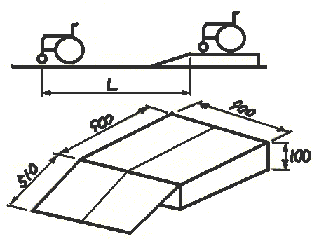
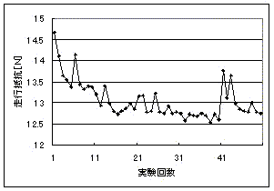
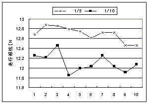
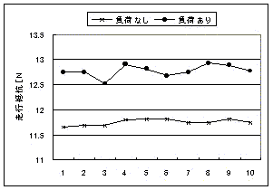
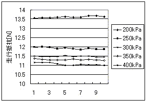

第１６回リハ工学カンファレンス予稿集原稿より部分改変
青い文字は追加説明です．車いすの走行抵抗を安価に計測する方法
Evaluation of Rolling Resistance of Wheelchair with Lower Cost富山県高志リハビリ病院研究開発部臨床リハ工学サービス科 大島淳一
キーワード：車いす，走行抵抗，計測
１ はじめに
数ある福祉機器のうちで，車いすは社会的にそのシンボルと見なされるほど広く普及している．しかし一旦市場に出た機械製品としての車いすの状態はそれこそ千差万別で，長く使用した古い車いすほどこの差が大きくなる．この原因は，自動車の車検制度に相当する定期点検の必要性が使用者に浸透していないこと，そしてその担い手も少ないことが考えられる．即ち車いすの性能管理はまさに野放しといえる状況である．
それにも関わらず車いすの適用の現場では，車いすの機械的性能が考慮されることは極めて少なく，状態の定かでない車いすでの試行により，結果として根拠の希薄な二者択一が行われることがある．また結果が得られるまで，延々と試行錯誤を続けたり，一つの試行から次の試行へノウハウの蓄積ができないなどの問題もある．また使用者からは，もっと軽く動くようにとの要望が絶えず寄せられるのも現実である．
以上より最も把握すべき車いすの機械的性能は走行抵抗と考えられる．一般に古い車いすや重量の重い車いすは走行抵抗も大きいと考えられがちであるが，経験上一概にそうとも言い難い部分もあると考える．
車いすの走行抵抗を計測する試みは既にいくつか行われている1)．しかしその多くは，床反力計など高額な設備を使用している．この点が，車いすの走行抵抗計測の普及を妨げている要因の一つと考えられる．
これら一連の問題を解決するためには，車いすの走行抵抗を計測する統一された実験手法が求められる．その方法には，単純な原理，簡単な道具，実用的な計測精度，実験に手間やコストがかからないことなどが必要である．
今回，極めて安価に車いすの走行抵抗を計測する手法について提案する．２ 惰行法の車いすへの応用
自動車の排出ガステストではシャーシダイナモの負荷を決めるために惰行法(Coastdown Method)が広く用いられている．これは，平坦な路面での惰行走行において一定速度から一定速度へ減速する時間と車両重量から，走行抵抗を推定する方法である．この方法の特徴は，原理が単純で，使用する計測器も速度計と連動したタイマのみである点である．しかし車いすに応用するために，さらに単純化し道具を少なくする必要がある．
そこで，ある重量の車いすをある高さの台の上から，スロープを通り床面に下り，平坦な路面を惰行し，自然に停止するまでの走行距離から走行抵抗を推定する方法について考える．
台に車いすを乗せることで，与えられた位置エネルギが，スロープを下りることで速度エネルギに変換され，それが惰行中に走行抵抗で消費され車いすは停止する．これを数式で表現すると以下のようになる．PE = Wgh = 1/2(Wv02) = int[RF(v(t)) dt]0t1*L/t1
PE ：台上での位置エネルギ
W ：車いすの総重量
g ：重力加速度
h ：台の高さ
v0 ：（計算上の）初速
RF(v(t)) ：走行抵抗
L ：惰行距離
t1 ：惰行時間式に間違いがあり訂正いたしました．ご指摘感謝いたします．
走行抵抗は速度の関数であるが，車いすのように複雑な要因が関係している系では，これを解明することは一般に容易ではない．そこで走行抵抗は，速度に因らず一定であると仮定する．
RF(v) = RF = const.
よって上式は，
Wgh = RF * L
と単純化される．
３ 実験装置とその考察
台の高さは，位置エネルギを決定する因子である．そしてスロープを下りたあとの車いすの速度に影響し，惰行する距離即ち，準備すべき実験場所の制約ともなる．台の高さがあまりに高すぎると，車いすは現実離れした速度で走ることのなり，先に設けた走行抵抗は速度に因らず一定であるとの仮定を破綻させる可能性もある．位置エネルギが全て速度エネルギに変換されると．台の高さが100mmの場合，約5.0km/hとなり，一般的な速度域と考えられる．
スロープの面は，実験装置の単純化のために平面とする．この角度が急すぎると，台から斜面へ入る時と斜面から床面に入る時に車いすにピッチ方向の運動が発生する．よって斜面角度が急すぎるとここで位置エネルギの速度エネルギへの変換にロスが生じ，計測結果の信頼性が低下する．また傾斜角度が小さすぎると，重力による加速力が走行抵抗力を越えず，走行できないことも考えられる．そこで，傾斜が1/5と1/10の２種類のスロープを製作し，実際に実験してみた．その結果，1/5の斜面では，1/10より走行距離が約5％減少した．しかし1/10では，斜面が長いため，幅90cmの斜面から脱輪する場合が多かった．これは，車いすが台から斜面に入る際，先に斜面にかかった左右どちらかの前輪が，車体を左右に回転させるからである．実験作業を効率よく進めるためには，スロープの傾斜角度はあまり大きくない方がよい．以上より図１のような実験装置を製作した．台とスロープの中央には線を引いた．
計測対象となる車いすの重量と各車輪への重量配分は走行抵抗を計測する上で管理すべき項目である．特に空気タイヤの転がり抵抗はその変形量に影響されるからである．試みに人間が乗り４輪の重量配分をヘルスメータで計測した．その結果，着座位置，姿勢，上肢の位置などにより変化が大きく走行抵抗の計測を人間が乗車したまま行うことは現実的でないと判断した．
そこで乗員の体重を60kgとしこれに相当するおもりを車いす座面に乗せることにした．各車輪への荷重分布は，四輪とも均等になるようにおもりを置く位置で調整した．実際には，3.65kgのペットボトル16本と800gの小ボトル２本を使用した．ペットボトルは４Ｘ４に組み合わせ，車いすの座面に置いた．また小ボトルは，四輪への荷重配分調整に利用した．
空気圧は，タイヤの転がり抵抗に影響することはよく知られている．空気圧計付き空気ポンプも市販されているが，計測機器としての信頼性に不安があるために，実験装置として市販ポンプに空気圧計を取り付けて使用した．
実験は当院のコンクリート長尺塩化ビニルシート仕上げの廊下で行った．必要な長さはおよそ15mである．実験に必要なものは以上である．

図１ 実験装置（台とスロープ）
４ 実験手順
実験は以下の手順で行った．
１）車いすに所定の60kgのおもりをのせ，四輪分布加重を均一にする．タイヤの空気圧をメーカ指定値に合わせる．そして車いす全体の重量を計測する．
２）台の上に車いすをのせ．キャスタが後ろを向くようにしてから，台の中央線に合わせて，勢いを極力つけないように注意して前進させスロープから走らせる．
３）車いすが自然に停止したならば，両前輪接地点の中点から，台の前端と中央線が交わる点までの直線距離を計測する．
４）計測した距離を式にあてはめ，走行抵抗を算出する．５ 実験結果と考察
５－１ 車いすの走行抵抗の特徴
車いすの走行抵抗を理解するために，12時間室温で放置した車いすについて繰り返し１分間隔で50回計測した．この実験では１回の計測で惰行距離も含め20m走行するように，また手で押して移動する際も5km/hを保つように実験した．その結果を図２に示す．ここで５回目の後に２分間，40回目の後に５分間の中断がある．
図２ 車いす走行抵抗の変化

図３ スロープの角度の計測結果への影響走行抵抗は，計測を重ねるごとに徐々に小さくなる傾向があり，約30回目（走行距離で約600m）で平衡に達する．このとき0.1～0.2N（約10～20gf）の計測精度が期待できる．また中断後は走行抵抗が一時的に増加する傾向もあり，この傾向は他の車いすでも見られた．
この原因として，ベアリングなど潤滑部分の油膜の安定や熱による潤滑剤の粘性特性の変化など考えられるがはっきりはしない．少なくとも，放置した車いすでは２割程度走行抵抗が大きいことはわかった．
車いすの走行抵抗を安定して計測するためには，計測する前に数百ｍ走行し，暖機が必要であること．また計測結果が安定するまで一定時間間隔で計測を繰り返す必要がある．また極端な高温や低温での計測についても注意する必要があるかも知れない．車いすを操作する練習をして，やっと何とか動かせるようになったのに一休みしたら，あるいは次の日に同じことを試みたらうまくできなくなったということは，図２の結果より車いすの特性として大いにあり得ることがわかる．逆に数百メートル走行した直後は，２割程度操作を軽くすることもできる．
５－２ スロープの傾斜角度の影響
傾斜1/5と1/10のスロープで比較した結果を図３に示す．結果はいずれも平衡に達した後の10回の計測結果である（以下同じ）．傾斜が1/5の方が約5%惰行距離が少なく，走行抵抗が大きく計算される．
これより，この方法では厳密な意味で走行抵抗の絶対値を求めることは出来ないことがわかる．よって別の方法での実験結果と比較する場合には注意が必要である．
また先にも述べたように，傾斜が1/10では実験を円滑に進めにくい．５－３ 人工的負荷の影響
引きずると1Nの負荷を発生するおもりの有無で計測した結果を図４に示す．10回の計測値の平均は，負荷ありで12.77N，負荷なしで11.74Nとなり，負荷の有無が計測結果に反映されている．これより実験方法が同じなら結果を比較するには問題はないと言える．
図４ １Ｎの負荷有無での計測結果
５－４ タイヤ空気圧との関係
タイヤの空気圧と走行抵抗の関係を図５に示す．タイヤメーカの推奨空気圧は320kPaである．ここで200kPaの空気圧とは，目安としてタイヤを指で押して1cmへこむ程度である．この状態だと，使用者は約200gの負担を負っていることになる．そしてタイヤに空気を十分入れるだけで，負担は約２割軽減できる．
図５ タイヤ空気圧と走行抵抗
６ おわりに
まず今回の試みの費用をまとめる．台とスロープの材料が1000円弱，ヘルスメータ４個が2100円，空気ポンプが1000円弱，圧力計が2200円，おもりが０円であった．総費用は6000円程度であった．
この方法は，少ない費用と簡単な方法の割に精度の高い計測が可能であった．もちろん走行抵抗の絶対値がこの方法で求まらないが，相対的比較が問題になる現場では機能的に十分であろう．
この方法は，車いす操作能力評価や車いすの改良に役立つだろう．また経済的余裕の少ない発展途上国などでも役に立つだろう．参考文献
1) 一例として，青柳，大鍋：種々床面における車椅子の転がり抵抗，第15回リハ工学カンファレンス講演論文集，pp.585-586，2000